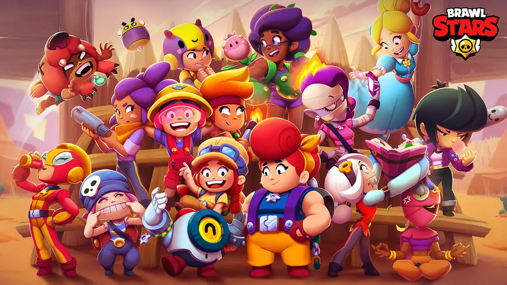

What Are Video Games?
The simple answer is that a video game is interactive digital entertainment that you “play” via a computer, a game console (like the Xbox or PlayStation) or a phone or tablet. There, you can go home now because class is over and we’re done. That really does sum it all up — but it’s not a very good explanation of everything going on here.
Console Games
Console games are more commonly referred to as video games. They are played on a device specially made for game play called a video game console. The player interacts with the game through a controller, a hand-held device with buttons and joysticks or pads.

PC Games
A personal computer game, aka PC game, is a type of video game played on a personal computer (PC) rather than a console or phone. Its defining characteristics include: more diverse and user-determined gaming hardware and software; and generally greater capacity in input, processing, video and audio output.
Mobile Games
Mobile games are games designed for mobile devices, such as smartphones, tablet PCs, etc. Mobile games range from basic (like Snake on older Nokia phones) to sophisticated (3D and augmented reality games). Today’s mobile phones - particularly smartphones - have a wide range of connectivity features, including infrared, Bluetooth, Wi-Fi and 3G. These technologies facilitate wireless multiplayer games with two or more players.
Types of Video Games I Like
I've been gaming for about 10 years. Over that time I went from a casual, "I'm just here to have fun", type of gamer to a sweaty, button mashing machine. I've played many different genres of games, but there are only a select few that have become my favorites. My number one all time favorite is fps, (first person shooter). Call of Duty would classify as a first person shooter. There's just something about running around in a bunny suit, emoting and dancing over your opponents dead character that really gets the blood pumping! (JK JK). The "looter shooter" genre would come in at two on my list. I enjoy the scavenger hunt style of the games, and the feeling of being an actual survivor in a post apocalyptic world. I don't always play games that involve war and guns though. Sometimes I like to explore my creative/imaginative side with games like Minecraft (It's not just a kids game). My mood usually determines when and what game I'll put a few hours of my time into, I don't have as much time as I used to but I make time when I can.
Gamer Account Links
- XBL: SPIFF
- Steam: Bean$
- Discord: Bean$#3363